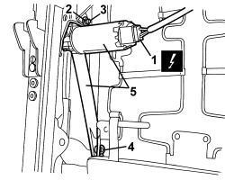
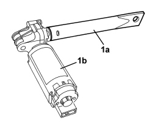

7045J30 FRONT SEAT LIFTING MOTOR, LEFT OR RIGHT - R.R. FOLLOWING ELECTRICAL WIRING CHECK
- Path
- Procedures > 70 FITTINGS > 7045 FRONT SEATS > 7045J FRONT SEAT ELECTRIC MOVEMENTS > 7045J30 FRONT SEAT LIFTING MOTOR, LEFT OR RIGHT - R.R. FOLLOWING ELECTRICAL WIRING CHECK
- Kind
- repair procedure (removal / refitting; the operation number is the code)
- Applies to
- all engines; all production periods; only with equipment: Electric seats
- Interactive page
- https://sloeber94.github.io/elrnDB/#/939005571
Applies to: all engines; all production periods; only with equipment: Electric seats
 Removing
Removing
 Refitting
Refitting- Raise the seat until it is in the end of travel position.
Op. 7045A10 FRONT SEAT (ONE), LEFT OR RIGHT - R.R.
1. Tighten the bolt (1a) securing the seat belt anchorage link (1b).
2. Release seat belt anchorage link (1b) from retainer (2a), then move.

Applies to: all engines; all production periods; only with equipment: Electric seats
1. Disconnect the electrical connection.
Description | Component |
|---|---|
LEFT FRONT SEAT REAR HEIGHT ADJUSTMENT MOTOR | |
PASSENGER SIDE SEAT RAISING MOTOR |
2. Release the circlip.
3. Remove the pin.
4. Undo the bolt.
5. Remove the motor with arm.

Applies to: all engines; all production periods; only with equipment: Electric seats
Refitting
Removing- Check that the motor and arm are not damaged.
1. Check that arm (1a) is fully tightened on motor (1b) as shown in the figure (required to facilitate installation).

Applies to: all engines; all production periods; only with equipment: Electric seats
- Position the motor with arm.
- Tighten the bolt.
- Insert the pin and fit the retaining ring.
- Connect the electrical connection.
- Position the seat belt anchorage link in its seat, then fit to the retainer and tighten the bolt.
Op. 7045A10 FRONT SEAT (ONE), LEFT OR RIGHT - R.R.
- Check that the seat is working properly.
Topics linked from this page (3)
- 7045A10 FRONT SEAT (ONE), LEFT OR RIGHT - R.R.
- N125 LEFT FRONT SEAT REAR HEIGHT ADJUSTMENT MOTOR
- N128 PASSENGER SEAT LIFT MOTOR